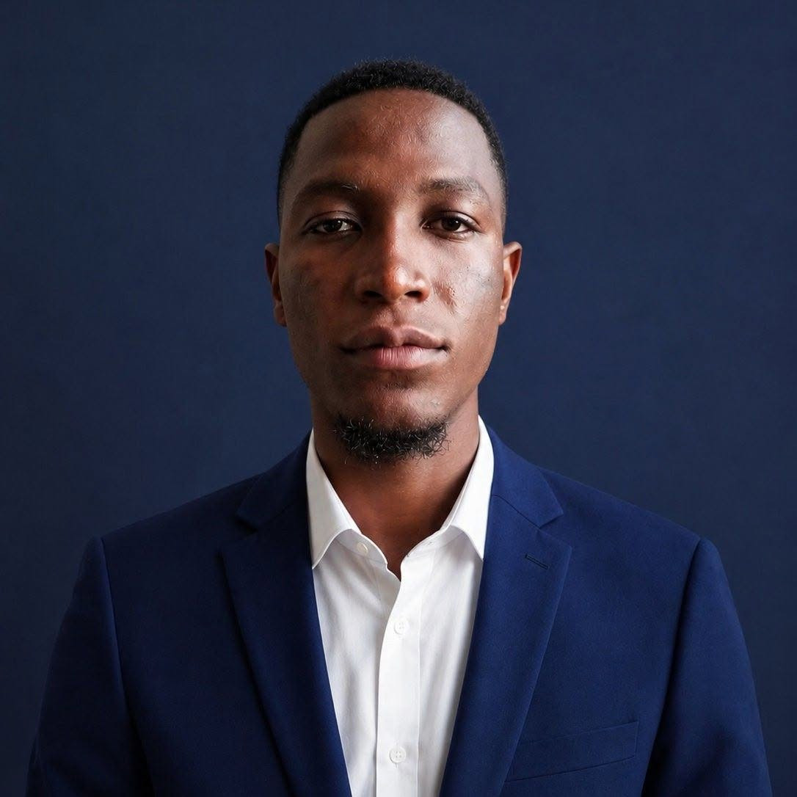

Doctorant en Informatique | Moniteur Ph.D Candidate in Computer Science | Graduate assistant
École Nationale Supérieure Polytechnique de Maroua (ENSPM) National Higher Polytechnic School of Maroua (ENSPM)
ENSPM, Université de Maroua, Cameroun
ENSPM, University of Maroua, Cameroon
e-mail: beidisamuel11@gmail.com
e-mail: ph.dift250507@student.mau.edu.ng
Tél.Tel.: +237 620 601 651 / +234 810 409 4880
Moniteur à l'École Nationale Supérieure Polytechnique de Maroua (ENSPM) et doctorant en Informatique (Ph.D Candidate) à Modibbo Adama University, Yola (Nigeria). Ma recherche doctorale porte sur l'atténuation proactive et adaptative des cyberattaques zero-day dans les systèmes critiques hybrides IoT-Edge-Cloud, en m'appuyant sur l'apprentissage automatique pour améliorer la détection et la prédiction des vulnérabilités. Ces travaux ont donné lieu à un premier preprint sur l'état de l'art des approches de machine learning pour la détection des vulnérabilités zero-day, publié sur SSRN.
Passionné par la cybersécurité, l'intelligence artificielle et les technologies émergentes, mon parcours académique et professionnel combine expertise technique, recherche, enseignement et leadership, avec une expérience en administration réseau et systèmes, cybersécurité, développement web/mobile et analyse de données. Mon mémoire de master a porté sur la conception d'un système IoT et multi-agents pour le monitoring et le suivi des patients asthmatiques du 3e âge.
Tout au long de mon parcours, j'ai exercé en tant qu'assistant d'enseignement universitaire — notamment sur les cours d'intelligence artificielle et interaction humain-machine — et formateur professionnel en maintenance informatique et technologies numériques. J'ai également contribué au développement de plusieurs projets numériques et plateformes collaboratives, alliant innovation et résolution pratique de problèmes.
Au-delà de la recherche, je suis activement engagé dans l'entrepreneuriat et le leadership étudiant en tant que Directeur de campus du Hult Prize à l'Université de Maroua, où j'accompagne les étudiants dans le développement de projets innovants et à impact.
Curieux, adaptable et orienté résultats, je m'intéresse particulièrement à la cybersécurité, à l'apprentissage automatique, aux infrastructures intelligentes et aux solutions basées sur l'IA conçues pour répondre aux défis technologiques actuels.
Graduate Assistant at the National Higher Polytechnic School of Maroua (ENSPM) and PhD Candidate in Computer Science at Modibbo Adama University, Yola (Nigeria). My doctoral research focuses on proactive and adaptive mitigation of zero-day cyberattacks in hybrid IoT-Edge-Cloud critical systems, leveraging machine learning to improve vulnerability detection and prediction. This work has led to a first preprint on the state of the art of machine learning approaches for zero-day vulnerability detection, published on SSRN.
Passionate about cybersecurity, artificial intelligence, and emerging technologies, my academic and professional journey combines technical expertise, research, teaching, and leadership, with experience in network and systems administration, cybersecurity, web/mobile development, and data analysis. My master's thesis focused on designing an IoT and multi-agent system for monitoring and follow-up of elderly asthmatic patients.
Throughout my career, I have served as a university teaching assistant — including for courses on artificial intelligence and human-machine interaction — and professional trainer in computer maintenance and digital technologies. I have also contributed to the development of several digital projects and collaborative platforms, combining innovation with practical problem-solving.
Beyond research, I am actively involved in entrepreneurship and student leadership as Campus Director of the Hult Prize at the University of Maroua, where I support students in innovation and impact-driven project development.
Curious, adaptable, and results-oriented, I am particularly interested in cybersecurity, machine learning, intelligent infrastructures, and AI-driven solutions designed to address modern technological challenges.
Mon travail se situe à l'intersection de l'intelligence artificielle, de la cybersécurité et des systèmes distribués. Je m'intéresse particulièrement à la conception de solutions d'apprentissage automatique adaptatives, respectueuses de la vie privée et efficaces en ressources pour les infrastructures critiques — avec un focus sur l'IoT santé dans les environnements à ressources limitées en Afrique de l'Ouest. My work sits at the intersection of artificial intelligence, cybersecurity, and distributed systems. I am particularly interested in building adaptive, privacy-preserving, and resource-efficient machine learning solutions for real-world critical infrastructure — with a focus on healthcare IoT in resource-constrained environments across West Africa.
Thèse de doctorat en cours : « Atténuation proactive et adaptative des cyberattaques zero-day dans les systèmes critiques hybrides IoT-Edge-Cloud » — Modibbo Adama University, 2026. Les articles évalués par les pairs et les actes de conférence seront listés ici au fur et à mesure de leur publication. Doctoral thesis in progress: "Proactive and Adaptive Mitigation of Zero-Day Cyberattacks in Hybrid IoT-Edge-Cloud Critical Systems" — Modibbo Adama University, 2026. Peer-reviewed papers and conference proceedings will be listed here as they are completed and published.
| Période Period | Poste Position | Établissement Institution | Format Format |
|---|---|---|---|
| École Nationale Supérieure Polytechnique de Maroua (ENSPM) National Higher Polytechnic School of Maroua (ENSPM) | |||
| 2024 – Present | Assistant d'enseignement (Moniteur) Teaching Assistant (Graduate assistant) | ENSPM | Cours, TD & TP |
| Faculté des Sciences — Université de Maroua (FS-UMa) Faculty of Sciences — University of Maroua (FS-UMa) | |||
| 2023 – 2024 | Moniteur — Cellule informatique - UMa Graduate Assistant — IT Unit - UMa | FS-UMa | Support technique & assistance Technical Support & Assistance |
| Preply (Remote) | |||
| 2025 – Present | Tuteur en Informatique Computer Science Tutor | Preply | Tutorat en ligne Online Tutoring |
| Zen Concept, Maroua | |||
| 2023 – 2024 | Superviseur professionnel & Formateur technique Professional Supervisor & Technical Trainer | Zen Concept | Formation appliquée Applied Training |
| ACUMA, Maroua | |||
| 2022 – 2023 | Formateur — Informatique Trainer — IT | ACUMA | Formation appliquée Applied Training |
| Cours Course | Niveau Level | Filière Track | Établissement Institution |
|---|---|---|---|
| Médias sociauxSocial Media | 1 | IAN / IHN | ENSPM |
| L'éthique à l'ère numériqueEthics in the Digital Age | 2 | IHN | ENSPM |
| Analyse de la valeur et Ingénierie de l'innovationValue Analysis and Innovation Engineering | 3 | IAN / IHN | ENSPM |
| Interactions humain-machine et ergonomieHuman-Machine Interaction and Ergonomics | 3 | IHN | ENSPM |
| Structures de donnéesData Structures | 2 | IAN/IHN | ENSPM |
| Sémiologie graphiqueGraphic Semiology | 3 | IHN | ENSPM |
| Intelligence artificielle et interaction humain-machineArtificial Intelligence and Human-Machine Interaction | 5 | IHN | ENSPM |
| Diplôme Degree | Étudiant Student | Période Period | Rôle Role | Statut Status | Sujet de recherche Research Topic |
|---|---|---|---|---|---|
| Licence Bachelor's Degree | YASSIKA EDMOND ENSPM — Arts Numériques | 2025–2026 | Encadreur Supervisor | Terminé Completed | Conception et mise en œuvre d'une chaîne audiovisuelle numérique pour la gestion et la transmission des connaissances entrepreneuriales : application à la promotion des entreprises et Start-ups locales. Cas de l'incubateur d'entreprise de l'ENSPM. Design and implementation of a digital audiovisual chain for the management and transmission of entrepreneurial knowledge: application to the promotion of local businesses and start-ups. Case of the ENSPM business incubator. |
Ouvert aux collaborations académiques, aux demandes d'encadrement d'étudiants, ainsi qu'aux opportunités de conférences et de formation. Je réponds généralement sous quelques jours. Open to academic collaboration, student supervision inquiries, and speaking or training opportunities. I usually respond within a few days.
École Nationale Supérieure Polytechnique de Maroua (ENSPM)
Université de Maroua, Cameroun
National Higher Polytechnic School of Maroua (ENSPM)
University of Maroua, Cameroon